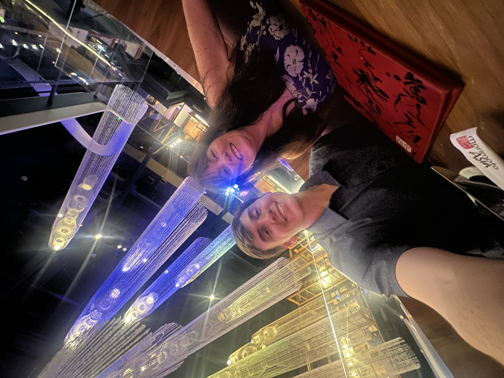
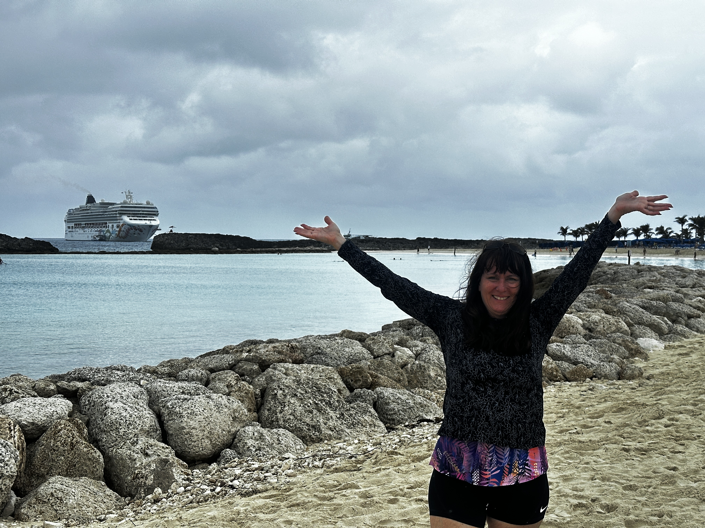
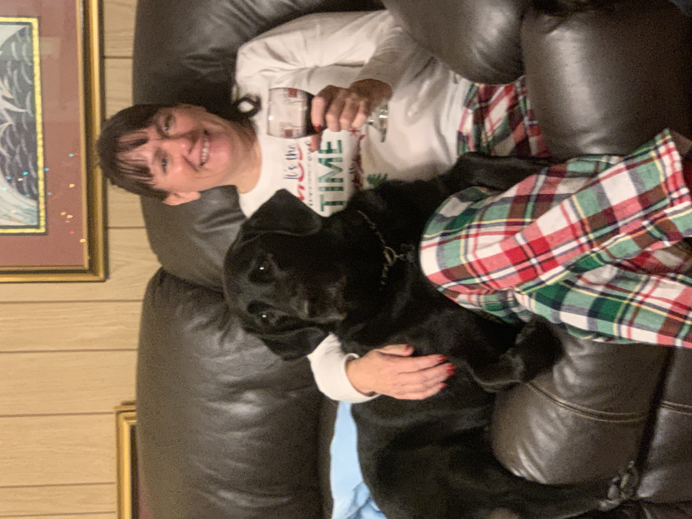
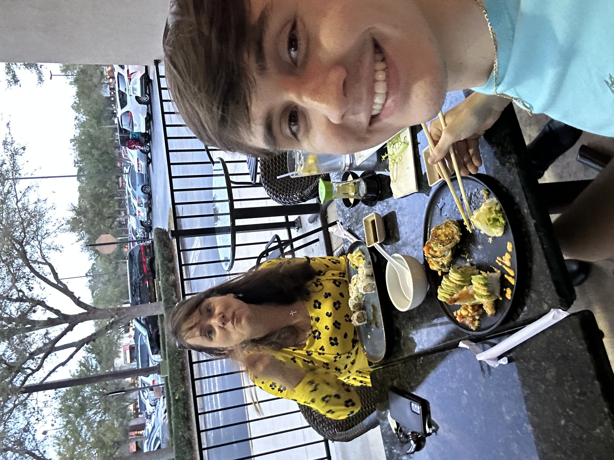
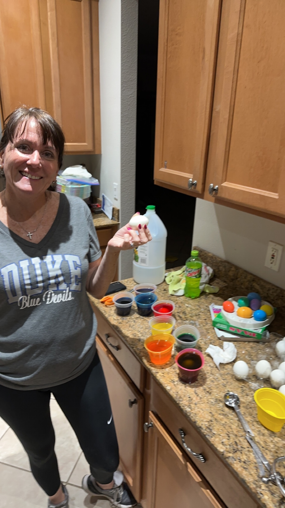

Happy Mother’s Day, Mom!
Today’s a celebration of you — your kindness, your strength, your laughter, and the love you give so freely every single day. I hope this little digital card brings a smile to your face, just like you bring joy to mine.
Memory Lane
Here are just a few of my favorite moments with you. There were so many but I decided to feature some of the highlights of how I view my time with you:
 Youre there for me in the fun and hard times
 You deserve a hundred more days like this
You deserve a hundred more days like this
 Mom vacations are always fun
 Loved by all
Loved by all (sometimes)
 Best dinners
 Best traditions
Special Moments Counter
- 1000 calls this year
- 100 laughs we’ve shared
- 20 times I’ve thought how lucky I am to have you as a mom
- countless times you helped brighten my day
Happy Mother’s Day, Mom.
With all my heart,
Evan